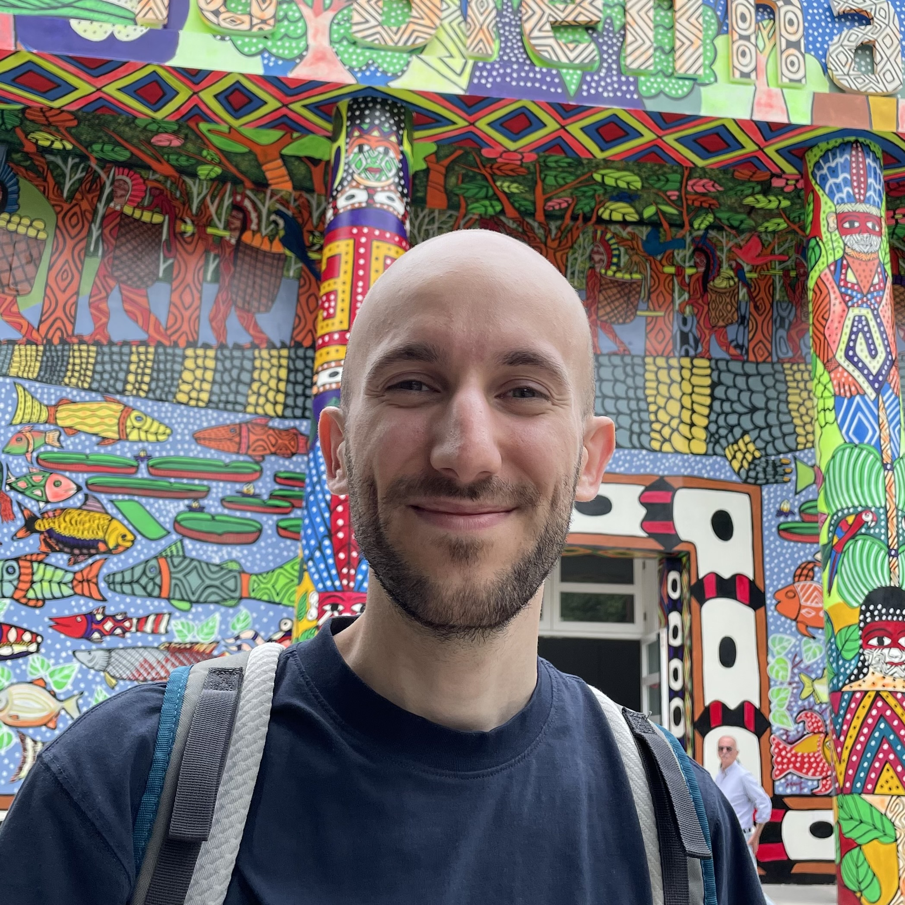

I am a Postdoctoral Researcher at the Institute of Philosophy at USI (Università della Svizzera italiana) in Lugano, Switzerland.
My research areas are philosophy of physics, philosophy of science, and metaphysics, particularly at their intersection. My main academic interest lies in inter-theory relations in science, especially reduction in physics. More broadly, I am interested in philosophical and foundational issues arising in spacetime theories, thermodynamics & statistical mechanics, astrophysics, and quantum mechanics.
I did my PhD at the University of Bristol, supervised by James Ladyman and Karim Thébault. I have been a visiting researcher at Pittsburgh and King’s College London. I'm an affiliate member of the Geneva Symmetry Group and COSMOS.
Scholar PhilPeople Twitter BlueSky
📄 Here is my CV (02/26) (PDF)